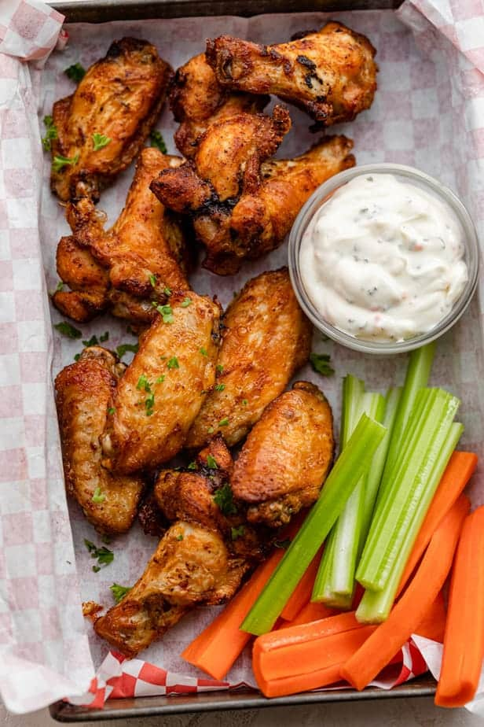

Air Fryer Wings

Desciption
Do your wings always come out soggy and flavorless?
Well you found the right recipe to fix that!
My simple air fryer recipe will produce crispy and flavor packed wings!
Ingredients
- Frozen chicken wings about 1 to 2lbs
- Cooking spray
- Sauce of choice, I go for sweet baby rays
- Air fryer liner is recommended
Steps
- Set air fryer to a tempurature of 390
- Place frozen wings in a single layer for 15 minutes
- After the 15 minutes discard any liquid at the bottom of the basket
- I usually remove the wings from the basket and replace the linner due to the amount of liquid produced
- Flip the wings and cook for another 10 minutes
- Spray the wings with the oil and cook for another 5 minutes
- Remove from basket and coat with your sauce